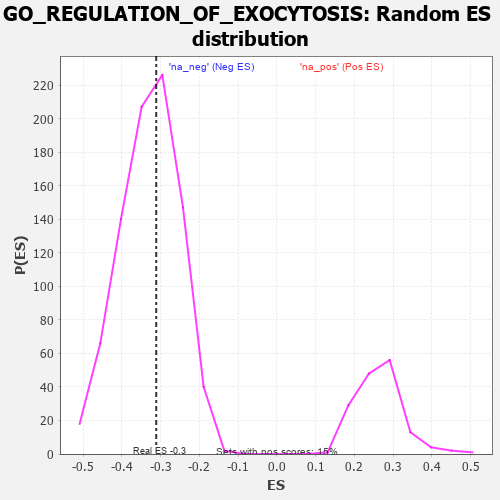

| | | Dataset | 7d |
| Phenotype | NoPhenotypeAvailable |
| Upregulated in class | na_neg |
| GeneSet | GO_REGULATION_OF_EXOCYTOSIS |
| Enrichment Score (ES) | -0.31150624 |
| Normalized Enrichment Score (NES) | -0.94748706 |
| Nominal p-value | 0.5673759 |
| FDR q-value | 0.9119631 |
| FWER p-Value | 1.0 |
Table: GSEA Results Summary
 Fig 1: Enrichment plot: GO_REGULATION_OF_EXOCYTOSIS
Fig 1: Enrichment plot: GO_REGULATION_OF_EXOCYTOSIS
Profile of the Running ES Score & Positions of GeneSet Members on the Rank Ordered List
| PROBE | GENE SYMBOL | GENE_TITLE | RANK IN GENE LIST | RANK METRIC SCORE | RUNNING ES | CORE ENRICHMENT | | 1 | SYT2 | | | 8 | 5.577 | 0.1432 | No |
| 2 | RAC2 | | | 60 | 2.442 | 0.1998 | No |
| 3 | FOXF1 | | | 176 | 1.136 | 0.2147 | No |
| 4 | NSF | | | 243 | 0.947 | 0.2308 | No |
| 5 | P2RY1 | | | 1416 | 0.407 | 0.0932 | No |
| 6 | BACE1 | | | 1673 | 0.360 | 0.0701 | No |
| 7 | ABR | | | 1812 | 0.335 | 0.0613 | No |
| 8 | FMR1 | | | 1816 | 0.334 | 0.0696 | No |
| 9 | SNF8 | | | 2119 | 0.288 | 0.0389 | No |
| 10 | SYK | | | 2186 | 0.278 | 0.0377 | No |
| 11 | REST | | | 2308 | 0.259 | 0.0291 | No |
| 12 | VPS4A | | | 2654 | 0.205 | -0.0092 | No |
| 13 | FER | | | 2803 | 0.183 | -0.0232 | No |
| 14 | RAB10 | | | 2952 | 0.157 | -0.0378 | No |
| 15 | SYT8 | | | 3115 | 0.135 | -0.0548 | No |
| 16 | AP1G1 | | | 3210 | 0.121 | -0.0636 | No |
| 17 | RAB8A | | | 3319 | 0.102 | -0.0746 | No |
| 18 | HGS | | | 3476 | 0.080 | -0.0923 | No |
| 19 | CDK5 | | | 3480 | 0.080 | -0.0906 | No |
| 20 | FES | | | 3501 | 0.077 | -0.0911 | No |
| 21 | SYT11 | | | 3732 | 0.036 | -0.1192 | No |
| 22 | HTR1B | | | 3745 | 0.035 | -0.1199 | No |
| 23 | SYT12 | | | 4172 | -0.037 | -0.1727 | No |
| 24 | SYT17 | | | 4310 | -0.061 | -0.1885 | No |
| 25 | RALA | | | 4416 | -0.079 | -0.1997 | No |
| 26 | LRRK2 | | | 4467 | -0.087 | -0.2038 | No |
| 27 | SYT4 | | | 4590 | -0.116 | -0.2162 | No |
| 28 | RAB21 | | | 4620 | -0.122 | -0.2167 | No |
| 29 | RAP1B | | | 4706 | -0.140 | -0.2238 | No |
| 30 | PCLO | | | 4793 | -0.156 | -0.2307 | No |
| 31 | VAMP8 | | | 4905 | -0.179 | -0.2401 | No |
| 32 | PDPK1 | | | 5043 | -0.207 | -0.2521 | No |
| 33 | DRD2 | | | 5088 | -0.221 | -0.2519 | No |
| 34 | DOC2B | | | 5113 | -0.229 | -0.2490 | No |
| 35 | RIMS2 | | | 5272 | -0.265 | -0.2621 | No |
| 36 | RAB7A | | | 5302 | -0.271 | -0.2588 | No |
| 37 | TRIM9 | | | 5526 | -0.327 | -0.2785 | No |
| 38 | DGKI | | | 5725 | -0.384 | -0.2936 | No |
| 39 | VAMP7 | | | 5777 | -0.399 | -0.2898 | No |
| 40 | LAMP1 | | | 5796 | -0.404 | -0.2816 | No |
| 41 | SNX4 | | | 5834 | -0.415 | -0.2756 | No |
| 42 | RAB13 | | | 5870 | -0.425 | -0.2690 | No |
| 43 | SYT9 | | | 5992 | -0.469 | -0.2722 | No |
| 44 | SYTL4 | | | 6304 | -0.578 | -0.2966 | Yes |
| 45 | RALB | | | 6399 | -0.617 | -0.2925 | Yes |
| 46 | SYT15 | | | 6472 | -0.650 | -0.2848 | Yes |
| 47 | VAMP2 | | | 6525 | -0.672 | -0.2740 | Yes |
| 48 | ARF1 | | | 6583 | -0.701 | -0.2631 | Yes |
| 49 | RAB5A | | | 6655 | -0.741 | -0.2529 | Yes |
| 50 | VPS18 | | | 6659 | -0.743 | -0.2341 | Yes |
| 51 | CPLX1 | | | 6684 | -0.753 | -0.2176 | Yes |
| 52 | GSK3B | | | 6719 | -0.768 | -0.2021 | Yes |
| 53 | GIPC1 | | | 6819 | -0.826 | -0.1932 | Yes |
| 54 | DNM1L | | | 6963 | -0.913 | -0.1877 | Yes |
| 55 | CCR2 | | | 7003 | -0.939 | -0.1683 | Yes |
| 56 | CFTR | | | 7143 | -1.030 | -0.1593 | Yes |
| 57 | SYT1 | | | 7148 | -1.033 | -0.1331 | Yes |
| 58 | KCNB1 | | | 7444 | -1.327 | -0.1361 | Yes |
| 59 | TRPV6 | | | 7569 | -1.502 | -0.1130 | Yes |
| 60 | ADCY1 | | | 7695 | -1.752 | -0.0835 | Yes |
| 61 | GRIK5 | | | 7792 | -2.044 | -0.0428 | Yes |
| 62 | CALM3 | | | 7869 | -2.525 | 0.0129 | Yes |
Table: GSEA details [plain text format]

Fig 2: GO_REGULATION_OF_EXOCYTOSIS: Random ES distribution
Gene set null distribution of ES for GO_REGULATION_OF_EXOCYTOSIS